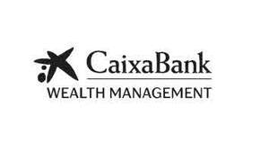

Trade Mark Journal No.2025/028 11 July 2025
UK00004225739 27 June 2025 (35,36,41)

- Class 35
- Advertising, marketing and promotional services; business analysis, research and information services; business assistance, management and administrative services; commercial trading and consumer information services.
- Class 36
- Finance services; banking; financing services; financial management; financial management; financial valuation services; advisory services relating to loan services; loan advice and loan procurement services; mortgage services; investment management; trusteeship; financial advisory services; banking services for deposit-taking; processing payments for the purchase of goods and services via an electronic communications network; rental of cash dispensers or automated-teller machines; electronic processing of payments; processing of electronic payments; payment transaction card services; processing of payment transactions via the internet; conducting cashless payment transactions; conducting of financial transactions on-line; conducting of capital market transactions; financial transfers and transactions, and payment services; electronic credit card transactions; bank card, credit card, debit card and electronic payment card services; automated telling machine services; online business banking services; providing information relating to the rental of cash dispensers or automated teller machines; credit card and debit card services; processing of debit card payments; processing of electronic check payments; financial consultancy relating to the execution of cashless payment transactions; issuing stored value cards; issuance of credit cards; automated banking services; electronic banking services; internet banking; providing on-line investment account information; providing financial information on-line; electronic banking via a global computer network [internet banking]; credit services; insurance underwriting; telephone banking services; banking services relating to the deposit of money; banking; on-line bill payment services; bill payment services; cash, check (cheque) and money order services; cheque encashment services; issuing of cheques; financial transaction services; issuing tokens of value as a reward for customer loyalty; financial intermediary services; on-line real-time currency trading; providing financial information via a web site; online banking; banking services provided in person, over the counter in bank branches, via telephone, video call, electronic mail messaging, SMS, online chat systems including webchat and social media, the Internet or other global communication network.
- Class 41
- Translation and interpretation; publishing and reporting; education, entertainment and sports.
FUNDACION BANCARIA CAIXA D'ESTALVIS I PENSIONS DE BARCELONA, "LA CAIXA"
Representative: Murgitroyd & Company